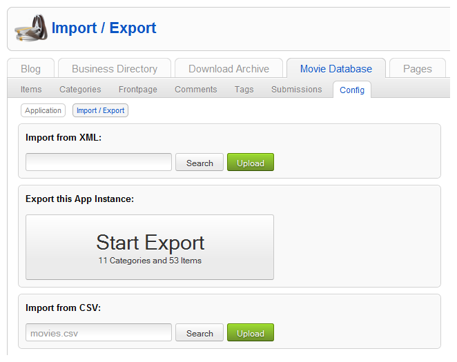
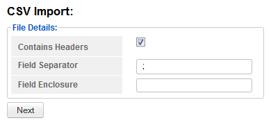
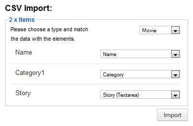

How to use the CSV importer
This is a short instruction on how to import data in your ZOO 2.1 extension using a CSV file.
Please note that you can only import data from elements of the type Text, Textarea, Email, Link, Date, Country, Gallery, Google Maps, Image and Download.
Prepare your CSV file
- To avoid format mismatches be sure that your CSV file is UTF-8 encoded.
- It is up to you whether you put column headers in the CSV file or not. This will be requested during import.
- Make sure you know the field separator and the field enclosure of your CSV file.
Applications use different field separators and the field enclosures for exporting to CSV files. Simply open your CSV file in a text editor and check the chars there.
Import the CSV file
Go to the ZOO administration and click on the app you want to import data to.
- Click on Config in the menubar and click on the Import/Export button.
- In the section Import from CSV click on Search and choose the CSV file on your computer.
- Click on Upload.

Choose whether your CSV file contains column headers or not.

Type in the field separator and the fiel enclosure of the CSV file. In this example we import a CSV file created by MS Excel, so the field separator is ";" and there is no field enclosure.

In the next screen you have to assign the data in your CSV file to an item type of the app.
- Choose the correct item type in the dropdown at the top.
- On the left you see the columns of your CSV file and on the right dropdown fields to assign them to elements of the item type.
- Choose corresponding elements for each CSV column to import the data to.
- Click on Import
When you want to assign the imported items to more than one category, just create one column for each category in your CSV file and assign both columns to the same element (in this case "Category").
The CSV Importer will look for existing categories in your application, that have the same name and if found, will assign items to these categories. If there is no existing category, a new category will be created.
When you want to import images you have to upload them to a folder in your Joomla installation (e.g. images/stories) and put the path to the image in the CSV file, e.g. images/stories/movie1.png
If you want to assign data to repeatable elements, you can simply assign multiple columns to the same element. (e.g. Textareas)
The newly imported items should appear unpublished in the item manager.